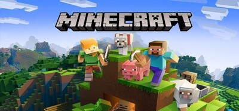
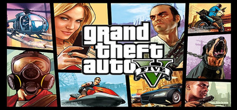

Plants vs. Zombies: Garden Warfare
Plants vs. Zombies: Garden Warfare es un juego de disparos en tercera persona en línea, basado en clases, con un enfoque irónico de los juegos de disparos modernos, como lo indica el título, en referencia a la serie Modern Warfare. Si bien el juego tiene lugar en el universo de Plants vs Zombies... Plants vs. Zombies Garden Warfare se mete en las trincheras con una nueva experiencia de acción explosiva. Vuela por los aires zombis, plantas y personajes únicos en un explosivo mundo que te proporciona la profundidad de un shooter online tradicional combinado con el humor refrescante del universo de Plants vs. Zombies.
más info

Minecraft
Explora mundos infinitos y construye cualquier cosa, desde la casa más sencilla hasta el más grandioso de los castillos. Juega en modo creativo con recursos ilimitados o extrae de las profundidades del mundo en el modo supervivencia para crear armas y armaduras que te defiendan de peligrosas criaturas. Construye, explora y sobrevive en solitario o con amigos en dispositivos móviles o en Windows 10. Escala escarpadas montañas, descubre intrincadas cuevas y excava grandes vetas de minerales. Descubre los biomas de cuevas frondosas y cuevas de espeleotema. ¡Llena de luz tu mundo para demostrar que eres un espeleólogo profesional y un maestro de la montaña!
más info
Fifa 14
Durante más de 20 años, EA SPORTS ha producido la legendaria serie FIFA, la mayor franquicia de videojuegos de deportes del mundo. En FIFA, el deporte rey cobra vida: disfruta de las ligas, clubes y jugadores más importantes del mundo del fútbol, con un detalle y realismo increíbles. Tanto si quieres formar el equipo de tus sueños en FIFA Ultimate Team, como si quieres conseguir que tu club favorito alcance la gloria en el modo Carrera, volver a llevar el juego a las calles con EA SPORTS VOLTA FOOTBALL o presumir con tus amigos en el modo de partido rápido, con la serie FIFA podrás vivir el deporte rey como quieras..
más info
Marvels Spider-Man Remastered
Marvel's Spider-Man Remasterizado para PC ha sido desarrollado por Insomniac Games en colaboración con Marvel y optimizado para PC por Nixxes Software. El protagonista es un Peter Parker veterano que ha pulido sus habilidades en la lucha contra el crimen y los villanos en la Nueva York de Marvel. A su vez, también lucha por poner en orden su caótica vida personal y su carrera, con el destino de la ciudad en sus manos.
más info
Call of Duty: Ghosts
SOMOS TODO LO QUE TENEMOS. Este nuevo capítulo de la franquicia Call of Duty®: Ghosts cuenta con una nueva dinámica en la que el jugador forma parte de una nación destrozada que no lucha por la libertad, sino por sobrevivir. Las fuerzas de operaciones especiales, un misterioso grupo conocido como "Ghosts", están al frente de la lucha contra una nueva potencia mundial tecnológicamente superior. En el modo multijugador de Call of Duty®: Ghosts podrás personalizar a tu soldado y tu pelotón por primera vez. Los entornos son más realistas e inmersivos que nunca.
más info

Grand Theft Auto V
Un joven estafador callejero, un ladrón de bancos retirado y un psicópata aterrador se ven involucrados con lo peor y más desquiciado del mundo criminal, del gobierno de los EE. UU. y de la industria del espectáculo, y tendrán que llevar a cabo una serie de peligrosos golpes para sobrevivir en una ciudad implacable en la que no pueden confiar en nadie. Y mucho menos los unos en los otros. Los jugadores actuales pueden transferir su progreso del modo Individual de GTA V y sus personajes y progresos de GTA Online a PlayStation®5 y Xbox Series X|S mediante una transferencia única.
más info